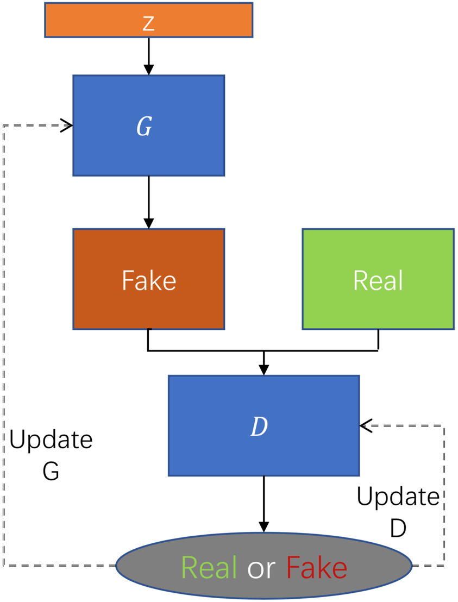

Generative Adversarial Networks (GANs)#
import matplotlib.pyplot as plt
import numpy as np
import random
from sklearn.model_selection import train_test_split
import torch
import torch.nn as nn
import torch.nn.functional as F
from torch.utils.data import DataLoader
from torchvision.transforms import Compose, ToTensor, Normalize
from torchvision.datasets import MNIST
def set_seed(seed):
"""Set ALL the random seeds to a fixed value and take out any randomness from cuda kernels."""
random.seed(seed)
np.random.seed(seed)
torch.manual_seed(seed)
torch.cuda.manual_seed_all(seed)
torch.backends.cudnn.benchmark = False # uses the inbuilt cudnn auto-tuner to find the fastest convolution algorithms.
# Useful when inputs do not change size.
torch.backends.cudnn.enabled = False
return True
# Set up device
device = 'cpu'
if torch.cuda.device_count() > 0 and torch.cuda.is_available():
print("Cuda installed! Running on GPU!")
device = 'cuda'
else:
print("No GPU available!")
device = 'cpu'
No GPU available!
Generative Adversarial Networks (GANs) ประกอบด้วย 2 network ที่แข่งกัน คือ
Generator (\(G\)) ทำหน้าที่สร้าง fake image จาก latent variable (\(\hat{x}=G(z)\)) ดังนั้น layer สุดท้ายจำมีจำนวน neuron เท่ากับจำนวน pixel ของภาพ
Discriminator (\(D\)) รับทั้งภาพ real image (\(x\)) และ fake image (\(\hat{x}\)) และระบุว่าแต่ละภาพเป็น real (1) หรือ fake (0) image ดังนั้น \(D\) จึงเป็น binary classifier (layer สุดท้ายจะมี neuron เดียว)

สิ่งที่เราต้องทำ คือ ทำให้ \(G\) สร้างภาพที่ดีพอที่จะหลอก \(G\) ว่าภาพนั้นเป็น real image
หาก \(D\) ระบุแต่ละภาพว่าเป็น real หรือ fake image ได้ถูกต้อง แสดงว่า \(G\) ยังไม่ดีพอ ต้อง update \(G\)
หาก \(D\) หลอก \(G\) ได้ (\(G\) ระบุภาพ fake image ว่าเป็น real image) ต้อง update \(D\) เพื่อให้ระบุได้ถูกต้องมากขึ้น
เป็น zero-sum game (ถ้า \(D\) ดีขึ้น/แย่ลง \(G\) จะแย่ลง/ดีขึ้น)
# Create generator and discirminator classes to be used in a GAN
class Generator(nn.Module):
def __init__(self, g_input_dim=100, g_output_dim=28*28):
super().__init__()
self.fc1 = nn.Linear(g_input_dim, 256)
self.fc2 = nn.Linear(self.fc1.out_features, self.fc1.out_features*2)
self.fc3 = nn.Linear(self.fc2.out_features, self.fc2.out_features*2)
self.fc4 = nn.Linear(self.fc3.out_features, g_output_dim)
def forward(self, x):
x = F.leaky_relu(self.fc1(x), 0.2)
x = F.leaky_relu(self.fc2(x), 0.2)
x = F.leaky_relu(self.fc3(x), 0.2)
return torch.tanh(self.fc4(x))
class Discriminator(nn.Module):
def __init__(self, d_input_dim=28*28):
super().__init__()
self.fc1 = nn.Linear(d_input_dim, 1024)
self.fc2 = nn.Linear(self.fc1.out_features, self.fc1.out_features//2)
self.fc3 = nn.Linear(self.fc2.out_features, self.fc2.out_features//2)
self.fc4 = nn.Linear(self.fc3.out_features, 1)
def forward(self, x):
x = F.leaky_relu(self.fc1(x), 0.2)
x = F.dropout(x, 0.3)
x = F.leaky_relu(self.fc2(x), 0.2)
x = F.dropout(x, 0.3)
x = F.leaky_relu(self.fc3(x), 0.2)
x = F.dropout(x, 0.3)
return torch.sigmoid(self.fc4(x))
# Initialise a generator (G) and a discriminator (D)
G = Generator().to(device)
D = Discriminator().to(device)
G
Generator(
(fc1): Linear(in_features=100, out_features=256, bias=True)
(fc2): Linear(in_features=256, out_features=512, bias=True)
(fc3): Linear(in_features=512, out_features=1024, bias=True)
(fc4): Linear(in_features=1024, out_features=784, bias=True)
)
D
Discriminator(
(fc1): Linear(in_features=784, out_features=1024, bias=True)
(fc2): Linear(in_features=1024, out_features=512, bias=True)
(fc3): Linear(in_features=512, out_features=256, bias=True)
(fc4): Linear(in_features=256, out_features=1, bias=True)
)
# Hyperparameters
criterion = nn.BCELoss()
z_dim = 100
bs = 100 # Batch size
lr = 0.0001 # Learning rate
G_optimizer = torch.optim.Adam(G.parameters(), lr=lr)
D_optimizer = torch.optim.Adam(D.parameters(), lr=lr)
n_epochs = 200
# Download and transform the MNIST training dataset
transform = Compose([
ToTensor(),
Normalize(mean=(0.5), std=(0.5)) # We don't use mean=(0.1307) and std=(0.3081)
# Otherwise, our GAN wouldn't be trained properly
])
dataset = MNIST(root='../data', train=False, download=True, transform=transform)
# We are not interested in checking the generalisation of the model
# And the test set is smaller than the training set
# Data Loader
loader = DataLoader(dataset=dataset, batch_size=bs, shuffle=True)
# Define training loops for D and G
def D_train(x):
D.train()
D_optimizer.zero_grad()
# Train the discriminator on real images
x_real = x.view(-1, 28*28).to(device)
y_real = torch.ones(bs, 1).to(device) # "ones" means real
D_output = D(x_real)
D_real_loss = criterion(D_output, y_real)
# Train the discriminator on fake images
z = torch.randn(bs, z_dim).to(device) # Sample latent vectors (z) randomly
x_fake = G(z) # Produce fake images from the sampled z
y_fake = torch.zeros(bs, 1).to(device) # "zeros" means fake
D_output = D(x_fake)
D_fake_loss = criterion(D_output, y_fake)
# Combine the losses
D_loss = D_real_loss + D_fake_loss
# Model update
D_loss.backward()
D_optimizer.step()
return D_loss.data.item()
def G_train(x):
G.train()
G_optimizer.zero_grad()
# Sample latent vectors (z) randomly and produce fake images from the sampled z
z = torch.randn(bs, z_dim).to(device)
G_output = G(z)
# Obtain scores from the discriminator given the fake images
D_output = D(G_output)
# Train the generator to fool the discriminator
y = torch.ones(bs, 1).to(device) # "ones" means real
G_loss = criterion(D_output, y) # The loss should be low if fake images are classified as real (1)
# Model update
G_loss.backward()
G_optimizer.step()
return G_loss.data.item()
# Train and validate the network and plot its learning curves
# You can use the "livelossplot" module to plot a real-time evolution of loss and accuracy
n_epochs = 200
D_losses, G_losses = [], []
for epoch in range(1, n_epochs+1):
for batch_idx, (x, _) in enumerate(loader):
D_loss = D_train(x)
G_loss = G_train(x)
# Store losses after completing each epoch
D_losses.append(D_loss)
G_losses.append(G_loss)
# Save the generator every 20th epochs
if(np.mod(epoch, 20) == 0):
torch.save(G.state_dict(), "../data/Generator_{:03d}.pth".format(epoch))
---------------------------------------------------------------------------
KeyboardInterrupt Traceback (most recent call last)
Cell In[11], line 6
4 D_losses, G_losses = [], []
5 for epoch in range(1, n_epochs+1):
----> 6 for batch_idx, (x, _) in enumerate(loader):
7 D_loss = D_train(x)
8 G_loss = G_train(x)
File ~\AppData\Local\Programs\Python\Python311\Lib\site-packages\torch\utils\data\dataloader.py:630, in _BaseDataLoaderIter.__next__(self)
627 if self._sampler_iter is None:
628 # TODO(https://github.com/pytorch/pytorch/issues/76750)
629 self._reset() # type: ignore[call-arg]
--> 630 data = self._next_data()
631 self._num_yielded += 1
632 if self._dataset_kind == _DatasetKind.Iterable and \
633 self._IterableDataset_len_called is not None and \
634 self._num_yielded > self._IterableDataset_len_called:
File ~\AppData\Local\Programs\Python\Python311\Lib\site-packages\torch\utils\data\dataloader.py:674, in _SingleProcessDataLoaderIter._next_data(self)
672 def _next_data(self):
673 index = self._next_index() # may raise StopIteration
--> 674 data = self._dataset_fetcher.fetch(index) # may raise StopIteration
675 if self._pin_memory:
676 data = _utils.pin_memory.pin_memory(data, self._pin_memory_device)
File ~\AppData\Local\Programs\Python\Python311\Lib\site-packages\torch\utils\data\_utils\fetch.py:51, in _MapDatasetFetcher.fetch(self, possibly_batched_index)
49 data = self.dataset.__getitems__(possibly_batched_index)
50 else:
---> 51 data = [self.dataset[idx] for idx in possibly_batched_index]
52 else:
53 data = self.dataset[possibly_batched_index]
File ~\AppData\Local\Programs\Python\Python311\Lib\site-packages\torch\utils\data\_utils\fetch.py:51, in <listcomp>(.0)
49 data = self.dataset.__getitems__(possibly_batched_index)
50 else:
---> 51 data = [self.dataset[idx] for idx in possibly_batched_index]
52 else:
53 data = self.dataset[possibly_batched_index]
File ~\AppData\Local\Programs\Python\Python311\Lib\site-packages\torchvision\datasets\mnist.py:145, in MNIST.__getitem__(self, index)
142 img = Image.fromarray(img.numpy(), mode="L")
144 if self.transform is not None:
--> 145 img = self.transform(img)
147 if self.target_transform is not None:
148 target = self.target_transform(target)
File ~\AppData\Local\Programs\Python\Python311\Lib\site-packages\torchvision\transforms\transforms.py:95, in Compose.__call__(self, img)
93 def __call__(self, img):
94 for t in self.transforms:
---> 95 img = t(img)
96 return img
File ~\AppData\Local\Programs\Python\Python311\Lib\site-packages\torchvision\transforms\transforms.py:137, in ToTensor.__call__(self, pic)
129 def __call__(self, pic):
130 """
131 Args:
132 pic (PIL Image or numpy.ndarray): Image to be converted to tensor.
(...)
135 Tensor: Converted image.
136 """
--> 137 return F.to_tensor(pic)
File ~\AppData\Local\Programs\Python\Python311\Lib\site-packages\torchvision\transforms\functional.py:170, in to_tensor(pic)
168 if pic.mode == "1":
169 img = 255 * img
--> 170 img = img.view(pic.size[1], pic.size[0], F_pil.get_image_num_channels(pic))
171 # put it from HWC to CHW format
172 img = img.permute((2, 0, 1)).contiguous()
KeyboardInterrupt:
fig, ax = plt.subplots(figsize=(6, 6))
ax.plot(range(1, n_epochs+1), D_losses, c='r', label="Discriminator")
ax.plot(range(1, n_epochs+1), G_losses, c='g', label="Generator")
ax.set(title="Generator and discriminator losses", xlabel="Epoch", ylabel="Loss")
ax.legend();